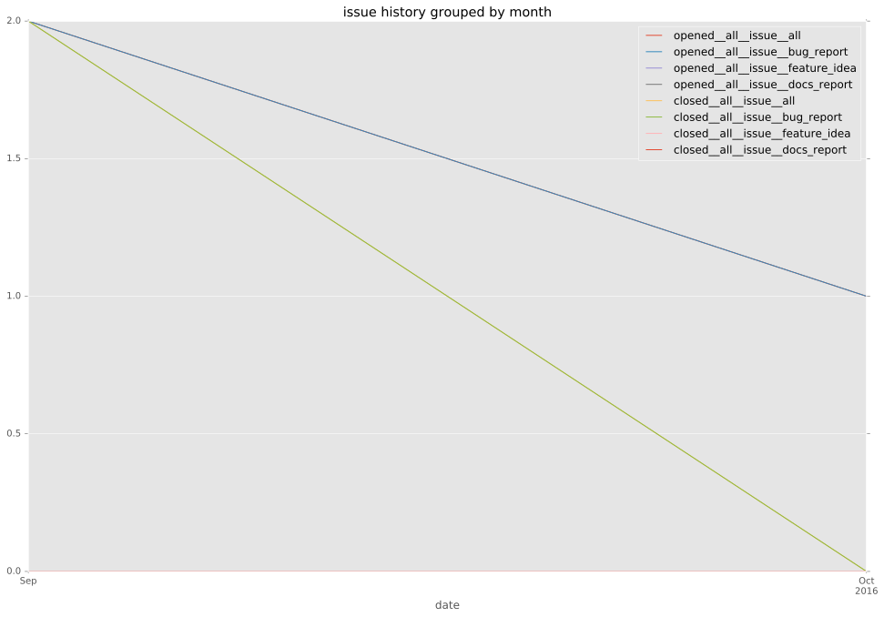
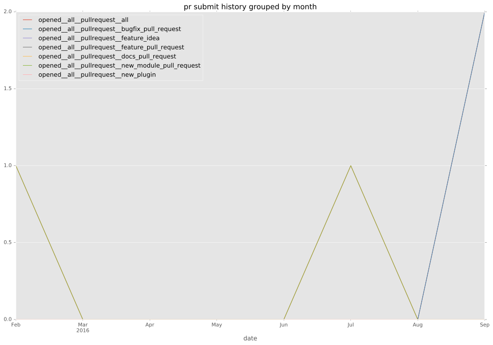
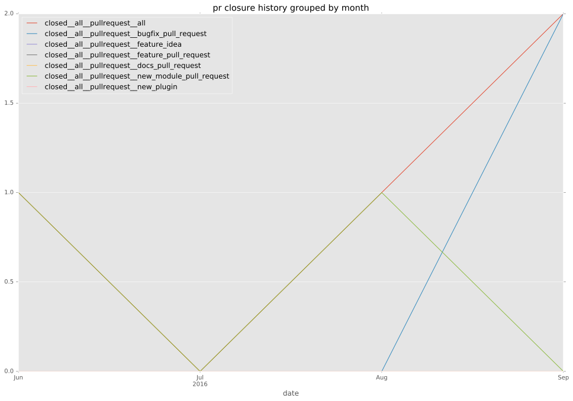
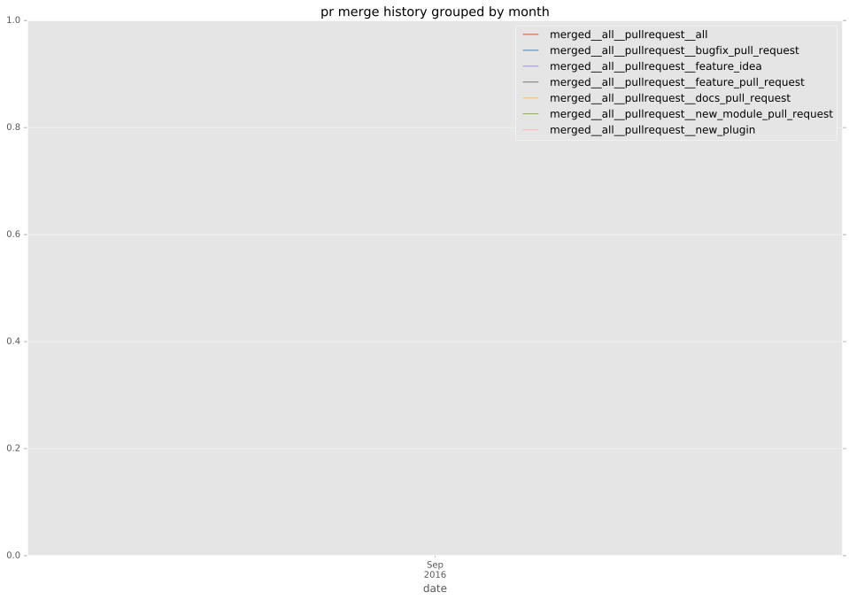
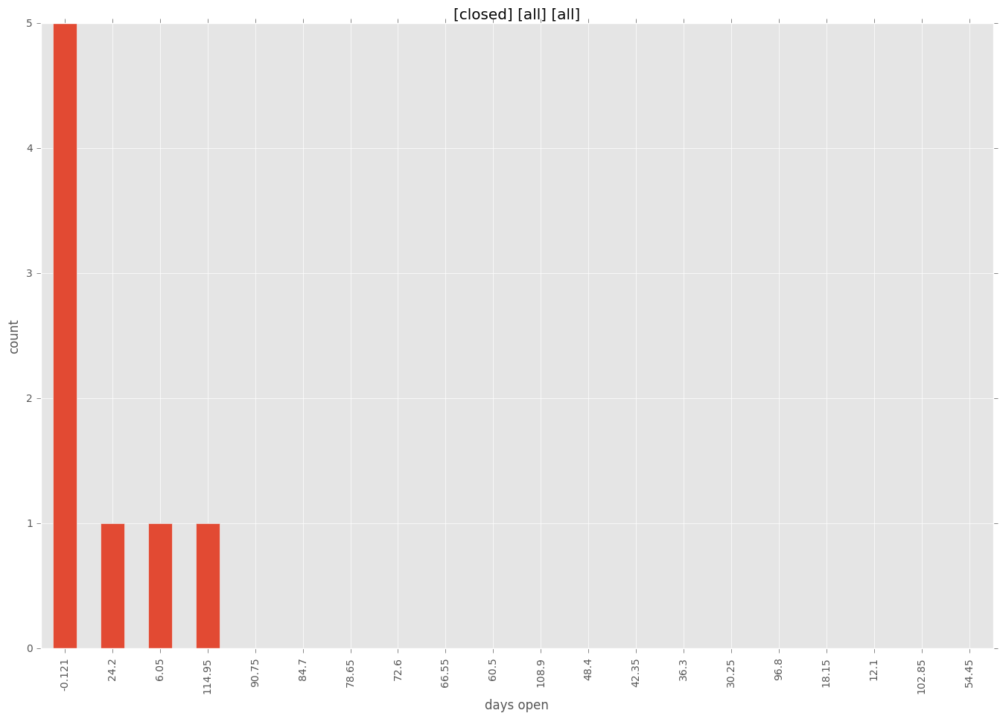
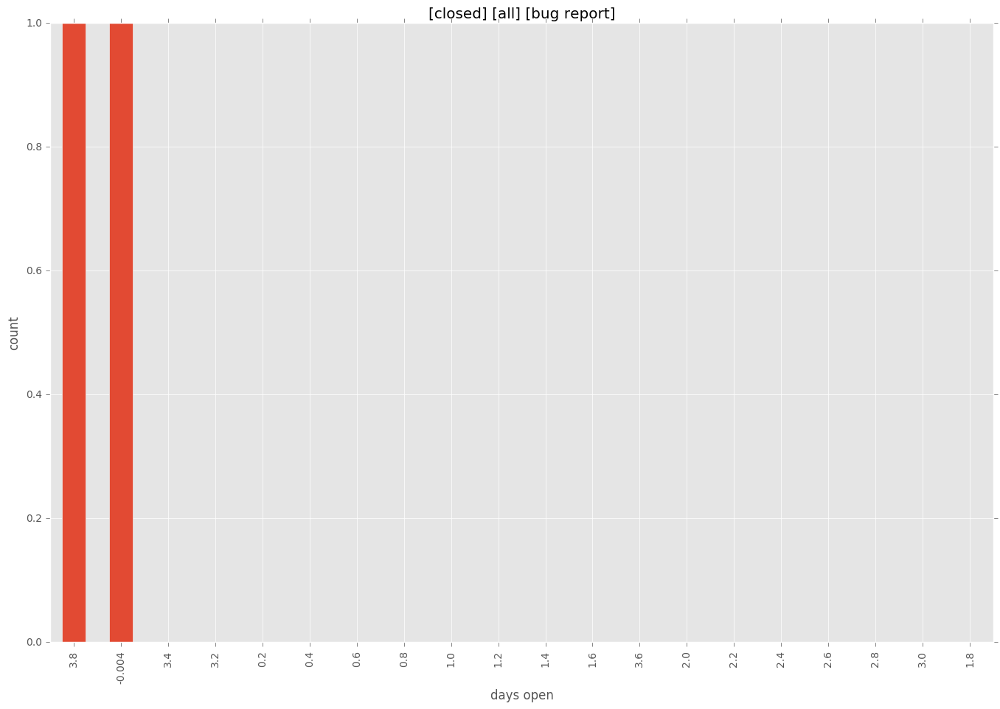
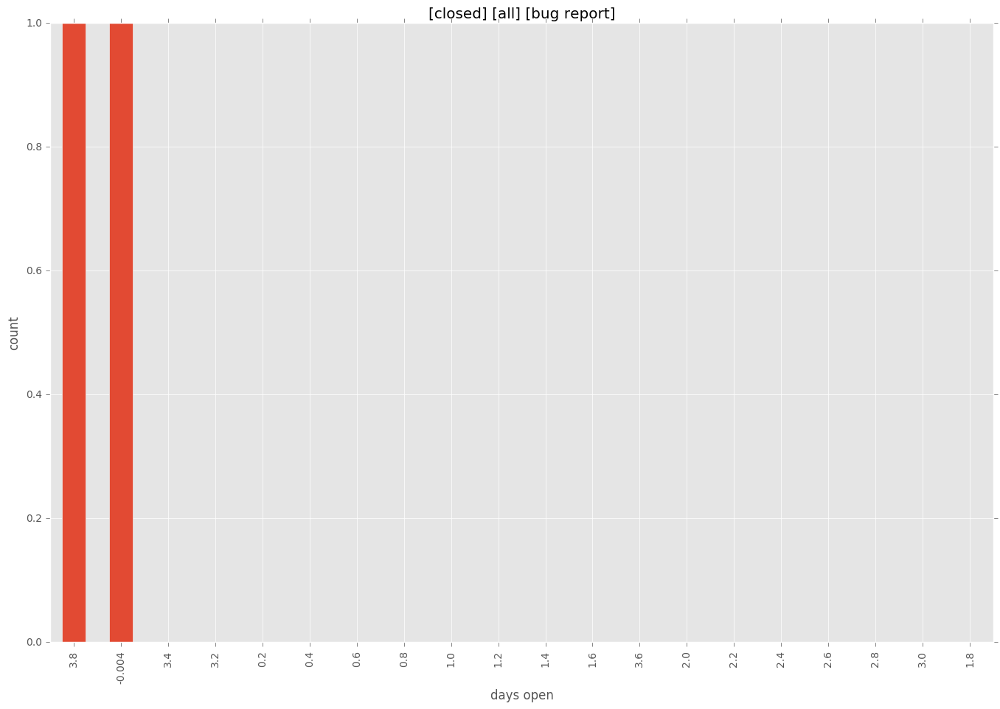

total issue counts
bugfix pull request: 2
pullrequest: 6
issue: 3
new plugin: 4
bug report: 3
issue history

pullrequest history



days open by issue type
all
count: 9
std: 39.7366329726
min: 0
max: 121
median: 0.0
mean: 18.3333333333
pullrequest
count: 0
std: nan
min: nan
max: nan
median: nan
mean: nan
bugfix pull request
count: 3
std: 0.0
min: 0
max: 0
median: 0.0
mean: 0.0
issue
count: 0
std: nan
min: nan
max: nan
median: nan
mean: nan
new plugin
count: 4
std: 55.2592375385
min: 0
max: 121
median: 20.0
mean: 40.25
bug report
count: 2
std: 2.82842712475
min: 0
max: 4
median: 2.0
mean: 2.0
closures grouped by total days open

 
